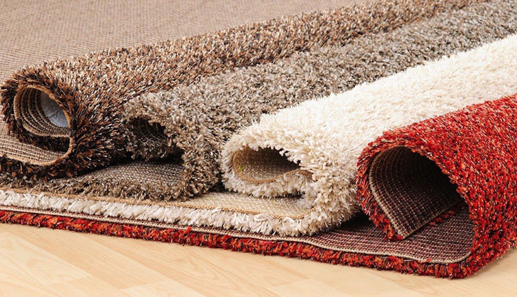
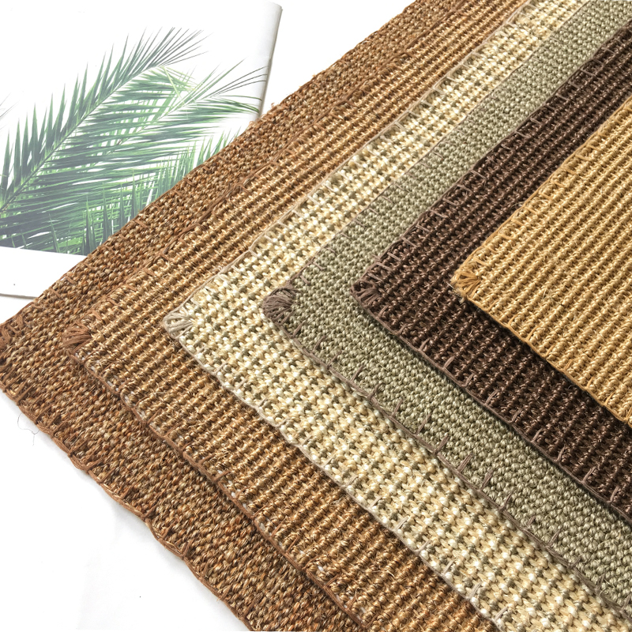
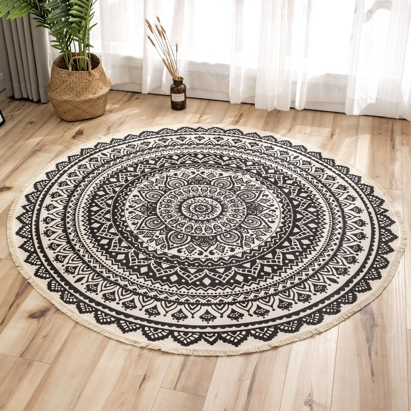
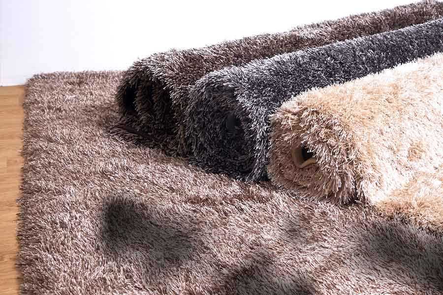
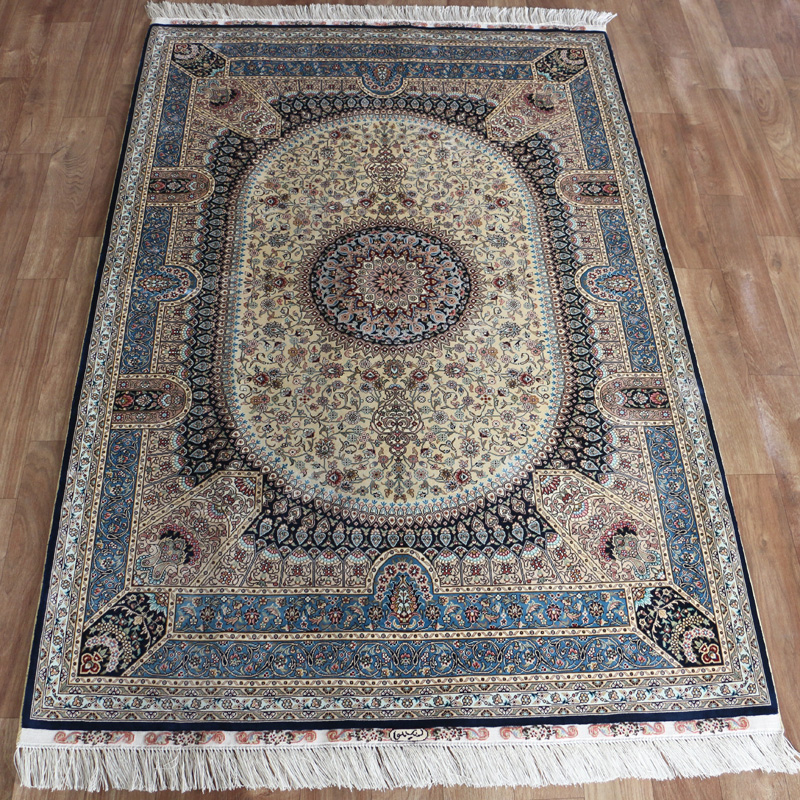

Recomended

NILON
- Bahan: Nilon
- Harga: Rp215.000/meter
- Deskripsi:
Karpet nilon banyak digunakan khususnya untuk kebutuhan kantor. Karpet nilon memiliki
durabilitas yang baik, karenanya karpet nilon cocok untuk digunakan pada area-area yang sering dilalui orang.
Dapatkan penawaran
menarik selama
Ramadhan 4.4 Sale!
Produk Terbaik Kami

SISAL
- Bahan: Serat Tumbuhan
- Harga: Rp520.000/meter
- Deskripsi:
KKarpet sisal adalah karpet lantai yang terbuat dari tanaman dan memiliki daya tahan yang cukup tinggi.
Karpet sisal memiliki tekstur agak kasar dan diperuntukkan untuk lantai dengan permukaan licin sehingga dapat menurunkan risiko terpeleset.

KATUN
- Bahan: Kain Katun
- Harga: Rp180.000/meter
- Deskripsi:
Karpet katun dibuat dengan lapisan atas dari bahan katun CVC (bahan kain sprei) yang adem dan
nyaman digunakan.

WOL
- Bahan: Kain Wol
- Harga: Rp290.000/meter
- Deskripsi:
Wol memang terkenal akan permukaannya yang sangat halus.
Karpet ini memiliki daya tahan yang sangat tinggi dan tahan terhadap noda maupun air.

SUTRA
- Bahan: Serat Sutra
- Harga: Rp760.000/meter
- Deskripsi:
ain sutra terdiri dari serat yang sangat lembut, dapat membuat sejuk dan juga
peredam suara yang baik. Karpet sutra juga dapat menyerap sinar ultraviolet sehingga aman bagi kulit manusia.